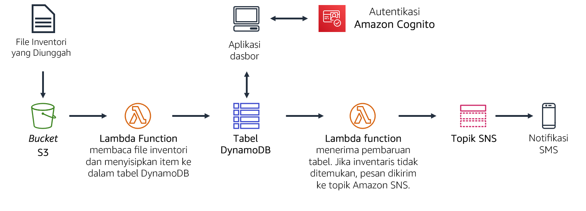
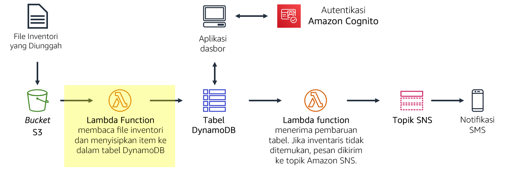
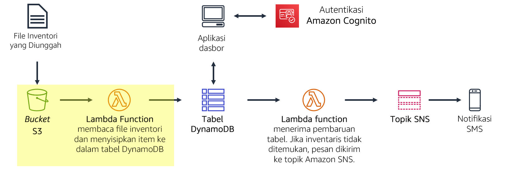
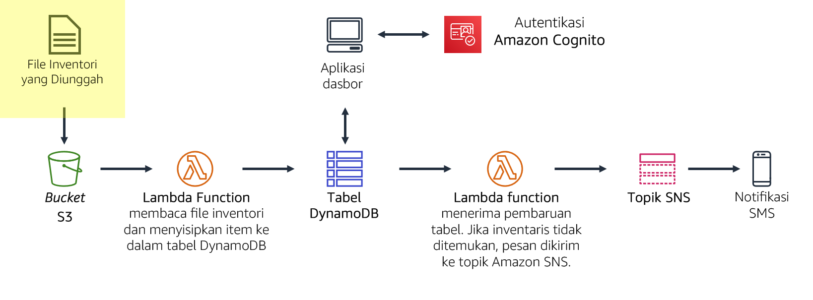
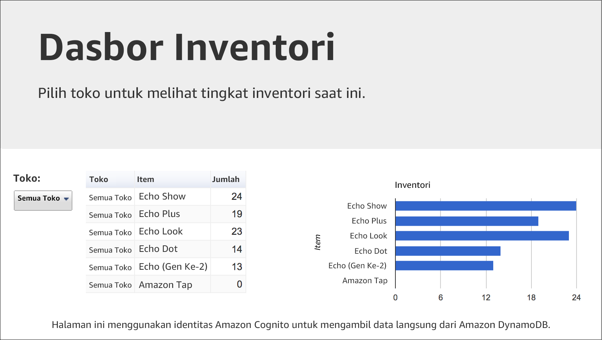
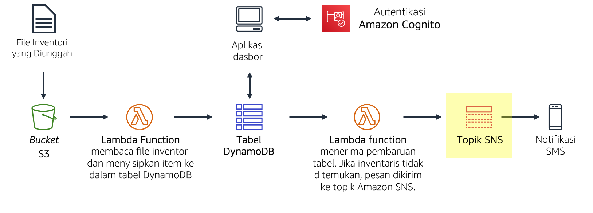
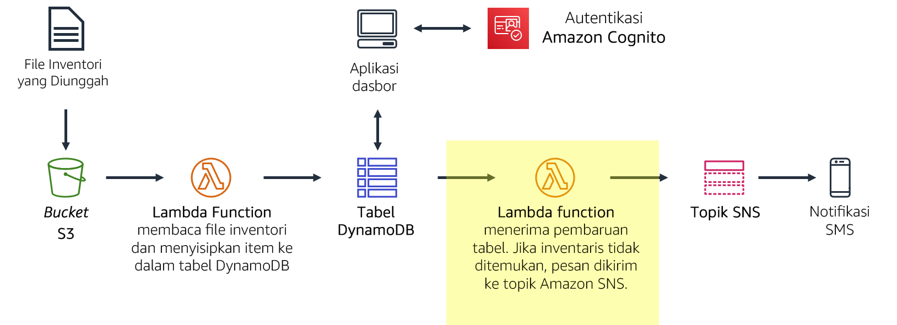

Anda sedang membuat sistem pelacakan inventaris. Penyimpanan dari seluruh dunia akan mengunggah file inventaris ke Amazon S3. Tim Anda ingin dapat melihat tingkat inventaris dan mengirim pemberitahuan ketika tingkat inventaris rendah.
Di lab ini, Anda akan:
Secara tradisional, aplikasi berjalan di server. Server ini dapat berbentuk fisik (atau bare metal). Server juga dapat berupa lingkungan virtual yang berjalan di atas server fisik. Namun, Anda harus membeli dan menyediakan semua jenis server ini, dan Anda juga harus mengelola kapasitasnya. Sebaliknya, Anda dapat menjalankan kode Anda di AWS Lambda tanpa perlu mengalokasikan server sebelumnya. Dengan Lambda, Anda hanya perlu menyediakan kode dan menentukan pemicu. Fungsi Lambda bisa berjalan saat dibutuhkan, baik itu sekali per minggu atau ratusan kali per detik. Anda hanya membayar apa yang Anda gunakan.
Lab ini mendemonstrasikan cara memicu fungsi Lambda ketika file diunggah ke Amazon Simple Storage Service (Amazon S3). File akan dimuat ke dalam tabel Amazon DynamoDB. Anda akan dapat melihat data pada halaman dasbor yang mengambil data langsung dari DynamoDB. Solusi ini tidak menggunakan Amazon Elastic Compute Cloud (Amazon EC2). Ini adalah solusi nirserver yang secara otomatis menyesuaikan ketika digunakan. Solusi ini juga hanya dikenai sedikit biaya saat digunakan. Ketika diam, praktis tidak ada biaya karena Anda akan hanya ditagih untuk penyimpanan data.
Setelah menyelesaikan lab ini, Anda akan mampu:
Pada akhir lab ini, arsitektur Anda akan terlihat seperti contoh berikut:

Diperlukan sekitar 40 menit untuk menyelesaikan lab ini.
Dalam lingkungan lab ini, akses ke layanan AWS dan tindakan layanan mungkin dibatasi untuk orang-orang yang diperlukan untuk menyelesaikan instruksi lab. Anda mungkin akan mengalami error jika mencoba mengakses layanan lain atau melakukan tindakan di luar yang dijelaskan di lab ini.
Di bagian atas instruksi ini, pilih Start Lab (Mulai Lab) untuk meluncurkan lab Anda.
Panel Start Lab (Mulai Lab) terbuka dan menampilkan status lab.
Tip: Jika Anda memerlukan lebih banyak waktu untuk menyelesaikan lab, mulai ulang pengatur waktu untuk lingkungan dengan memilih tombol Start Lab (Mulai Lab) lagi.
Tunggu hingga panel Start Lab (Mulai Lab) menampilkan pesan Lab status: ready (Status lab: siap), lalu tutup panel dengan memilih X.
Di bagian atas instruksi ini, pilih AWS.
Tindakan ini akan membuka Konsol Manajemen AWS di tab browser baru. Anda akan masuk ke sistem secara otomatis.
Tip: Jika tab browser baru tidak terbuka, banner atau ikon biasanya berada di bagian atas browser Anda dengan pesan bahwa browser Anda mencegah situs membuka jendela sembulan. Pilih banner atau ikon, lalu pilih Allow pop-ups (Izinkan sembulan).
Atur tab AWS Management Console(Konsol Manajemen AWS) agar ditampilkan bersama instruksi ini. Idealnya, Anda perlu membuka kedua tab browser secara bersamaan, sehingga Anda dapat mengikuti langkah-langkah lab dengan lebih mudah.
Jangan mengubah Wilayah kecuali secara khusus diperintahkan untuk melakukannya.
Dalam tugas ini, Anda akan membuat fungsi Lambda yang akan memproses file inventaris. Fungsi Lambda akan membaca file dan menyisipkan informasi ke dalam tabel Amazon DynamoDB.

Di AWS Management Console (Konsol Manajemen AWS), pada menu Services (Layanan), pilih Lambda.
Pilih Create function (Buat fungsi)
Blueprints adalah templat kode untuk menulis fungsi Lambda. Blueprints disediakan untuk pemicu Lambda standar, seperti menciptakan kemampuan Amazon Alexa dan memproses aliran Amazon Kinesis Data Firehose. Lab ini menyediakan fungsi Lambda yang sudah tertulis sebelumnya untuk Anda, sehingga Anda akan menggunakan opsi Author from scratch (Menulis dari awal).
Konfigurasikan pengaturan berikut ini:
Load-Inventory (Muat-Inventaris)Peran ini akan memberikan izin kepada fungsi Lambda agar dapat mengakses Amazon S3 dan Amazon DynamoDB.
Pilih Create function (Buat fungsi)
Gulir ke bawah ke bagian Code source (Sumber kode), dan di panel Environment (Lingkungan), pilih lambda_function.py.
Dalam editor kode, hapus semua kode.
Dalam editor Code source (Sumber kode), salin dan tempel kode berikut:
xxxxxxxxxx# Load-Inventory Lambda function## This function is triggered by an object being created in an Amazon S3 bucket.# The file is downloaded and each line is inserted into a DynamoDB table.import json, urllib, boto3, csv# Connect to S3 and DynamoDBs3 = boto3.resource('s3')dynamodb = boto3.resource('dynamodb')# Connect to the DynamoDB tablesinventoryTable = dynamodb.Table('Inventory');# This handler is run every time the Lambda function is triggereddef lambda_handler(event, context): # Show the incoming event in the debug log print("Event received by Lambda function: " + json.dumps(event, indent=2)) # Get the bucket and object key from the Event bucket = event['Records'][0]['s3']['bucket']['name'] key = urllib.parse.unquote_plus(event['Records'][0]['s3']['object']['key']) localFilename = '/tmp/inventory.txt' # Download the file from S3 to the local filesystem try: s3.meta.client.download_file(bucket, key, localFilename) except Exception as e: print(e) print('Error getting object {} from bucket {}. Make sure they exist and your bucket is in the same region as this function.'.format(key, bucket)) raise e # Read the Inventory CSV file with open(localFilename) as csvfile: reader = csv.DictReader(csvfile, delimiter=',') # Read each row in the file rowCount = 0 for row in reader: rowCount += 1 # Show the row in the debug log print(row['store'], row['item'], row['count']) try: # Insert Store, Item and Count into the Inventory table inventoryTable.put_item( Item={ 'Store': row['store'], 'Item': row['item'], 'Count': int(row['count'])}) except Exception as e: print(e) print("Unable to insert data into DynamoDB table".format(e)) # Finished! return "%d counts inserted" % rowCountPeriksa kode. Kode tersebut menjalankan langkah-langkah berikut:
Berikutnya, Anda akan mengonfigurasi Amazon S3 untuk memicu fungsi Lambda ketika file diunggah.
Penyimpanan dari seluruh dunia akan menyediakan file inventaris untuk dimuat ke dalam sistem pelacakan inventaris. Alih-alih mengunggah file mereka melalui FTP, penyimpanan dapat mengunggahnya langsung ke Amazon S3. Mereka dapat mengunggah file melalui halaman web, skrip, atau sebagai bagian dari program. Saat file diterima, fungsi Lambda terpicu. Fungsi Lambda ini kemudian akan memuat inventaris ke dalam tabel DynamoDB.

Dalam tugas ini, Anda akan membuat bucket Amazon S3 dan mengonfigurasikannya untuk memicu fungsi Lambda.
Setiap bucket harus memiliki nama yang unik, jadi Anda harus menambahkan angka acak pada nama bucket. Sebagai contoh: inventory-123
inventory-<number> (Ganti Anda mungkin menerima pesan kesalahan yang menyatakan: The requested bucket name is not available (Nama bucket yang diminta tidak tersedia). Jika Anda mendapatkan pesan kesalahan ini, pilih tautan Edit pertama, ubah nama bucket, dan coba lagi hingga nama bucket diterima.
xxxxxxxxxxKini Anda akan mengonfigurasi bucket agar secara otomatis memicu fungsi Lambda setiap kali file diunggah.
Anda akan mengonfigurasi aktivitas yang akan dipicu ketika suatu objek dibuat di bucket S3.
Load-InventoryKonfigurasi ini akan memerintahkan Amazon S3 untuk memicu fungsi Lambda Load-Inventory (Muat-Inventaris) yang Anda buat sebelumnya setiap kali objek dibuat di bucket.
Kini bucket Anda siap untuk menerima file inventaris!
Kini Anda siap untuk menguji proses pemuatan. Anda akan mengunggah file inventaris, kemudian memeriksanya apakah sudah berhasil dimuat.
 (Uji Pemuatan)
Beberapa file ini adalah file inventaris yang dapat Anda gunakan untuk menguji sistem. File tersebut berupa file dengan nilai dipisahkan koma (CSV). Contoh berikut menunjukkan isi file Berlin:
xxxxxxxxxx store,item,count Berlin,Echo Dot,12 Berlin,Echo (2nd Gen),19 Berlin,Echo Show,18 Berlin,Echo Plus,0 Berlin,Echo Look,10 Berlin,Amazon Tap,15Amazon S3 akan secara otomatis memicu fungsi Lambda, yang akan memuat data ke dalam tabel DynamoDB.
Aplikasi Dasbor nirserver telah disediakan bagi Anda untuk menampilkan hasil.
Aplikasi dasbor akan terbuka dan menampilkan data inventaris yang Anda muat ke dalam bucket. Data sedang diambil dari DynamoDB, yang membuktikan bahwa fungsi Lambda berhasil dipicu.

Jika aplikasi dasbor tidak menampilkan informasi apa pun, mintalah instruktur Anda untuk membantu Anda mendiagnosis masalah.
Aplikasi dasbor ini disajikan sebagai halaman web statis dari Amazon S3. Dasbor mengautentikasi melalui Amazon Cognito sebagai pengguna anonim, yang memberikan izin cukup bagi dasbor untuk mengambil data dari DynamoDB.
Anda dapat pula melihat data secara langsung di dalam tabel DynamoDB.
Data dari file inventaris akan ditampilkan. Data ini menunjukkan penyimpanan, item, dan jumlah inventaris.
Anda ingin memberitahu staf manajemen inventaris ketika penyimpanan kehabisan item. Untuk fungsi pemberitahuan nirserver ini, Anda akan menggunakan Amazon SNS.
 (Uji Pemuatan)
Amazon SNS adalah layanan olah pesan penerbitan/langganan dan pemberitahuan seluler yang fleksibel dan terkelola penuh. Layanan ini mengirimkan pesan untuk endpoint dan klien yang berlangganan. Dengan Amazon SNS, Anda dapat mengirimkan pesan ke banyak pelanggan, termasuk sistem dan layanan terdistribusi, serta perangkat seluler.
NoStockUntuk menerima pemberitahuan, Anda harus berlangganan topik tersebut. Anda dapat memilih untuk menerima pemberitahuan melalui beberapa cara, seperti SMS dan email.
Setelah membuat langganan email, Anda akan menerima email konfirmasi. Buka pesan dan pilih tautan Confirm subscription (Konfirmasi langganan).
Semua pesan yang dikirimkan ke topik SNS akan diteruskan ke email Anda.
Anda dapat memodifikasi fungsi Lambda Load-Inventory (Muat-Inventaris) yang sudah ada untuk memeriksa tingkat inventaris saat file sedang dimuat. Namun, konfigurasi ini bukan praktik arsitektur yang baik. Alih-alih memenuhi fungsi Load-Inventory (Muat-Inventaris) dengan logika bisnis, lebih baik Anda membuat fungsi Lambda lain yang akan terpicu setiap kali data dimuat ke dalam tabel DynamoDB. Fungsi ini akan dipicu oleh aliran DynamoDB.
Pendekatan arsitektur ini menawarkan beberapa manfaat:
Dalam tugas ini, Anda akan membuat fungsi Lambda yang mengawasi inventaris saat dimuat ke dalam tabel DynamoDB. Jika menemukan suatu item yang habis, fungsi Lambda akan mengirim pemberitahuan melalui topik SNS yang Anda buat sebelumnya.
 (Uji Pemuatan)
Check-Stock (Periksa-Stok)Peran ini telah dikonfigurasi dengan izin untuk mengirimkan pemberitahuan ke Amazon SNS.
Gulir ke bawah ke bagian Code source (Sumber kode), dan di panel Environment (Lingkungan), pilih lambda_function.py.
Dalam editor kode, hapus semua kode.
Salin kode berikut, dan dalam editor Code Source (Sumber Kode), tempel kode yang disalin:
xxxxxxxxxx# Stock Check Lambda function## This function is triggered when values are inserted into the Inventory DynamoDB table.# Inventory counts are checked and if an item is out of stock, a notification is sent to an SNS Topic.import json, boto3# This handler is run every time the Lambda function is triggereddef lambda_handler(event, context): # Show the incoming event in the debug log print("Event received by Lambda function: " + json.dumps(event, indent=2)) # For each inventory item added, check if the count is zero for record in event['Records']: newImage = record['dynamodb'].get('NewImage', None) if newImage: count = int(record['dynamodb']['NewImage']['Count']['N']) if count == 0: store = record['dynamodb']['NewImage']['Store']['S'] item = record['dynamodb']['NewImage']['Item']['S'] # Construct message to be sent message = store + ' is out of stock of ' + item print(message) # Connect to SNS sns = boto3.client('sns') alertTopic = 'NoStock' snsTopicArn = [t['TopicArn'] for t in sns.list_topics()['Topics'] if t['TopicArn'].lower().endswith(':' + alertTopic.lower())][0] # Send message to SNS sns.publish( TopicArn=snsTopicArn, Message=message, Subject='Inventory Alert!', MessageStructure='raw' ) # Finished! return 'Successfully processed {} records.'.format(len(event['Records']))Periksa kode. Kode tersebut menjalankan langkah-langkah berikut:
Kini Anda akan mengonfigurasi fungsi agar terpicu setiap kali data ditambahkan ke tabel Inventory di DynamoDB.
Pilih Deploy untuk menyimpan perubahan kode Anda
Gulir ke bagian Designer (Desainer) (yang ada di atas halaman).
Pilih Add trigger (Tambah pemicu) dan kemudian konfigurasikan pengaturan ini:
Kini Anda siap untuk menguji sistem!
Sekarang Anda akan mengunggah file inventaris ke Amazon S3, yang akan memicu fungsi Load-Inventory (Muat-Inventaris) asli. Fungsi ini akan memuat data ke dalam DynamoDB, yang kemudian akan memicu fungsi Lambda Check-Stock (Periksa-Stok) baru. Jika fungsi Lambda mendeteksi suatu item dengan inventaris nol, pesan akan dikirim ke Amazon SNS. Kemudian, Amazon SNS akan memberitahu Anda melalui SMS atau email.
Kini seharusnya Anda dapat menggunakan menu Store (Penyimpanan) untuk melihat inventaris dari kedua penyimpanan.
Selain itu, Anda akan menerima pemberitahuan melalui SMS atau email bahwa penyimpanan kehabisan suatu item (setiap file inventaris memiliki satu item yang habis).
Jika Anda tidak menerima pemberitahuan, tunggu beberapa menit dan unggah file inventaris yang berbeda. Pemicu DynamoDB terkadang butuh beberapa menit untuk aktif.
Tip: Anda dapat mengirimkan pekerjaan Anda beberapa kali. Setelah Anda mengubah pekerjaan, pilih Submit (Kirim) lagi. Apa yang akan direkam untuk lab ini adalah pengiriman terakhir Anda.
Selamat! Anda telah menyelesaikan lab.
Sebuah panel menunjukkan bahwa *DELETE has been initiated... * (Penghapusan sudah dimulai...) You may close this message box now. (Anda dapat menutup kotak pesan ini sekarang.)
©2020 Amazon Web Services, Inc. dan afiliasinya. Hak cipta dilindungi undang-undang. Karya ini tidak boleh direproduksi atau didistribusikan ulang, seluruhnya atau sebagian, tanpa izin tertulis sebelumnya dari Amazon Web Services, Inc. Dilarang menyalin, meminjamkan, atau menjual secara komersial.